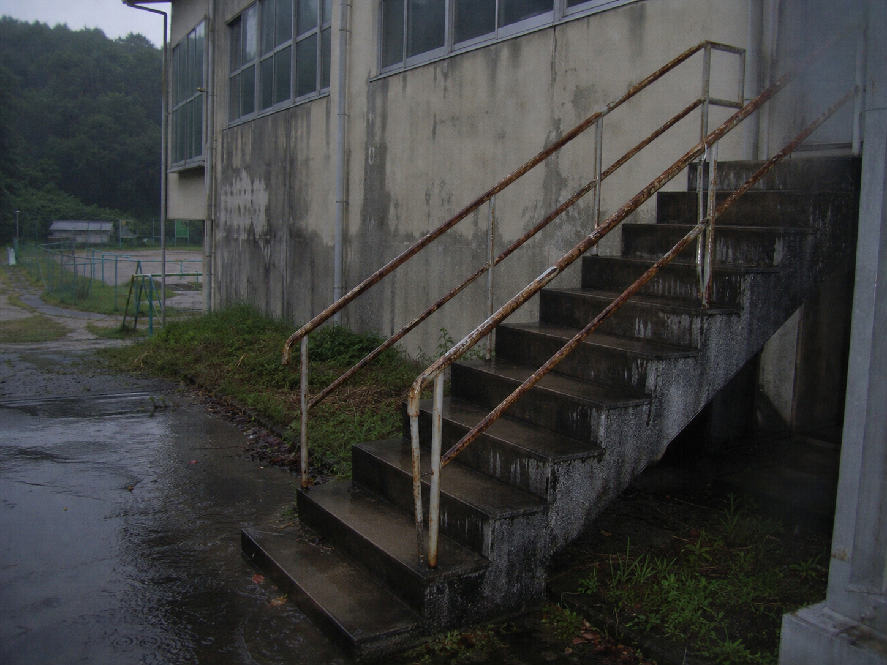

平成18年7月14日

補修写真控え。現地確認者と工事業者は、写真だけではなく台帳と学校だよりで照合します。
| 時刻 | 議題 | メモ |
|---|---|---|
| 18:10 | 大雨対応 | 裏山観察路を閉鎖。旧体育館東階段に雨漏り。 |
| 18:35 | 工事業者対応 | 鳴瀬建設へ連絡。橘修司会長が現地確認。 |
| 19:20 | 児童帰宅確認 | 6年1組 相沢澪の確認欄のみ空白。翌日「転出済」に修正。 |
| 20:05 | 校舎施錠 | 旧体育館側の外灯が点滅。点検は翌週へ。 |
工事台帳
| 業者 | 対象 | 備考 |
|---|---|---|
| 鳴瀬建設 | 旧体育館東階段 | 踏板補修。雨天時の水抜き未施工。 |
| 南谷電工 | 体育館非常灯 | 異常なし。 |
| 橘修司 | PTA安全委員会 | 現地確認者。橘健太の保護者。 |
電話控えの違和感
19:20の空白欄に対する翌朝の修正語は「欠席」ではなく「転出済」です。転出の連絡が先にあったなら、夜の帰宅確認表に空白が残る理由がありません。
このページでは、人物名と業者名だけが強く見えます。決め手は、同じ時刻に図書室側で封筒が移動している点です。